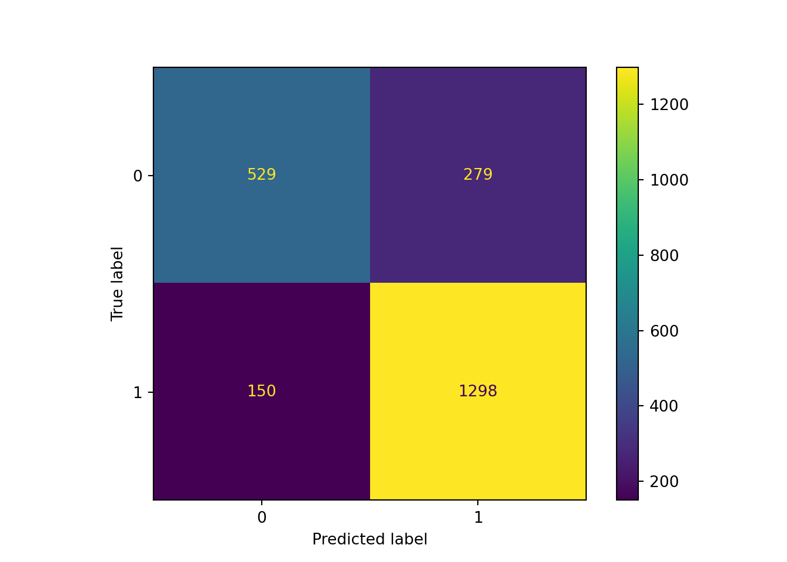
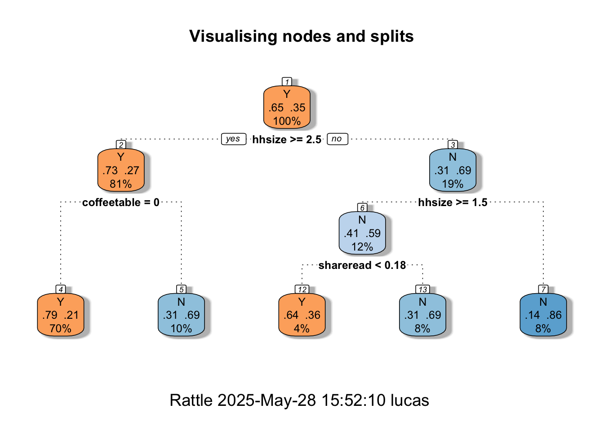
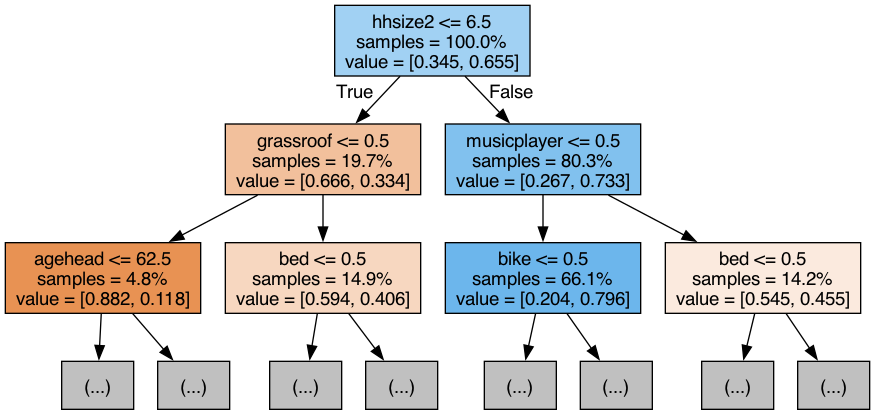

rm(list = ls()) # this line cleans your Global Environment.
setwd("/Users/lucas/Documents/UNU-CDO/courses/ml4p/ml4p-website-v2") # set your working directory
# Do not forget to install a package with the install.packages() function if it's the first time you use it!
library(dplyr) # core package for dataframe manipulation. Usually installed and loaded with the tidyverse, but sometimes needs to be loaded in conjunction to avoid warnings.
library(tidyverse) # a large collection of packages for data manipulation and visualisation.
library(caret) # a library with key functions that streamline the process for predictive modelling
library(skimr) # a package with a set of functions to describe dataframes and more
library(plyr) # a package for data wrangling
library(party) # provides a user-friendly interface for creating and analyzing decision trees using recursive partitioning
library(rpart) # recursive partitioning and regression trees
library(rpart.plot) # visualising decision trees
library(rattle) # to obtain a fancy wrapper for the rpart.plot
library(RColorBrewer) # import more colours
# import data
data_malawi <- read_csv("data/malawi.csv") # the file is directly read from the working directory/folder previously setTree-based models for classification problems
This section will cover:
- Decision Trees: a classification approach
- Ensemble learning: bagging and boosting.
A general overview of tree-based methods
An introduction to Tree-based machine learning models is given to us by Dr. Francisco Rosales, Assistant Professor at ESAN University (Perú) and Lead Data Scientist (BREIN). You can watch the pre-recorded session below:
Some key points to keep in mind when working through the practical exercise include:
Tree-based methods work for both classification and regression problems.
Decision Trees are both a logical and a technical tool:
they involve stratifying or segmenting the predictor space into a number of simple regions
from each region, we obtain a relevant metric (e.g. mean/average) and then use that information to make predictions about the observations that belong to that region
Decision Trees are the simplest version of a tree-based method. To improve on a simple splitting algorithm, there exist ensemble learning techniques such as bagging and boosting:
bagging: also known as bootstrap aggregating, it is an ensemble technique used to decrease a model’s variance. A Random Forest is a tree-based method that functions on the concept of bagging. The main idea behind a Random Forest model is that, if you partition the data that would be used to create a single decision tree into different parts, create one tree for each of these partitions, and then use a method to “average” the results of all of these different trees, you should end up with a better model.
boosting: an ensemble technique mainly used to decrease a model’s bias. Like bagging, we create multiple trees from various splits of our training dataset. However, whilst bagging uses bootstrap to create the various data splits (from which each tree is born), in boosting each tree is grown sequentially, using information from the previously built tree. So, boosting doesn’t use bootstrap. Instead each tree is a modified version of the original dataset (each subsequent tree is built from the residuals of the previous model).
To conclude our Malawi case study, we will implement a Random Forest algorithm to our classification problem: given a set of features X (e.g. ownership of a toilet, size of household, etc.), how likely are we to correctly identify an individual’s income class? Recall that this problem has already been approached using a linear regression model (and a lasso linear model) and a logistic classification (i.e. an eager learner model) and whilst there was no improvement between a linear and a lasso linear model, we did increase our model’s predictive ability when we switched from a linear prediction to a classification approach. I had previously claimed that the improvement was marginal — but since the model will be used to determine who gets and who doesn’t get an income supplement (i.e. who’s an eligible recipient of a cash transfer, as part of Malawi’s social protection policies), any improvement is critical and we should try various methods until we find the one that best fits our data.
Some discussion points before the practical:
Why did we decide to switch models (from linear to classification)?
Intuitively, why did a classification model perform better than a linear regression at predicting an individual’s social class based on their monthly per capita consumption?
How would a Random Forest classification approach improve our predictive ability? (hint, the answer may be similar to the above one)
Practical Example
As always, start by opening the libraries that you’ll need to reproduce the script below. We will continue to use the Caret library for machine learning purposes, and some other general libraries for data wrangling and visualisation.
#==== Python version: 3.10.12 ====#
# Opening libraries
import sklearn as sk # our trusted Machine Learning library
from sklearn.model_selection import train_test_split # split the dataset into train and test
from sklearn.model_selection import cross_val_score # to obtain the cross-validation score
from sklearn.model_selection import cross_validate # to perform cross-validation
from sklearn.ensemble import RandomForestClassifier # to perform a Random Forest classification model
from sklearn.metrics import accuracy_score, confusion_matrix, precision_score, recall_score, ConfusionMatrixDisplay # returns performance evaluation metrics
from sklearn.model_selection import RandomizedSearchCV # for fine-tuning parameters
from scipy.stats import randint # generate random integer
# Tree visualisation
from sklearn.tree import export_graphviz
from IPython.display import Image # for Jupyter Notebook users
import graphviz as gv
# Non-ML libraries
import random # for random state
import csv # a library to read and write csv files
import numpy as np # a library for handling
import pandas as pd # a library to help us easily navigate and manipulate dataframes
import seaborn as sns # a data visualisation library
import matplotlib.pyplot as plt # a data visualisation library
# Uploading data
malawi = pd.read_csv('/Users/lucas/Documents/UNU-CDO/courses/ml4p/ml4p-website-v2/data/malawi.csv')For this exercise, we will skip all the data pre-processing steps. At this point, we are all well acquainted with the Malawi dataset, and should be able to create our binary outcome, poor (or not), and clean the dataset in general. If you need to, you can always go back to the Logistic Classification tab and repeat the data preparation process described there.
Data Split and Fit
set.seed(1234) # ensures reproducibility of our data split
# data partitioning: train and test datasets
train_idx <- createDataPartition(data_malawi$poor, p = .8, list = FALSE, times = 1)
Train_df <- data_malawi[ train_idx,]
Test_df <- data_malawi[-train_idx,]
# data fit: fit a random forest model
# (be warned that this may take longer to run than previous models)
rf_train <- train(poor ~ .,
data = Train_df,
method = "ranger" # estimates a Random Forest algorithm via the ranger pkg (you may need to install the ranger pkg)
)
# First glimpse at our random forest model
print(rf_train)Random Forest
9025 samples
29 predictor
2 classes: 'Y', 'N'
No pre-processing
Resampling: Bootstrapped (25 reps)
Summary of sample sizes: 9025, 9025, 9025, 9025, 9025, 9025, ...
Resampling results across tuning parameters:
mtry splitrule Accuracy Kappa
2 gini 0.8108829 0.5557409
2 extratrees 0.7698647 0.4280448
16 gini 0.7999474 0.5472253
16 extratrees 0.8023850 0.5525424
30 gini 0.7946432 0.5359787
30 extratrees 0.7974024 0.5425408
Tuning parameter 'min.node.size' was held constant at a value of 1
Accuracy was used to select the optimal model using the largest value.
The final values used for the model were mtry = 2, splitrule = gini
and min.node.size = 1.If you read the final box of the print() output, you’ll notice that, given our input Y and X features, and no other information, the optimal random forest model, uses the following:
mtry = 2: mtry is the number of variables to sample at random at each split. This is the number we feed to the recursive partitioning algorithm. At each split, the algorithm will search mtry (=2) variables (a completely different set from the previous split) chosen at random, and pick the best split point.
splitrule = gini: the splitting rule/algorithm used. Gini, or the Gini Impurity is a probability that ranges from \(0\) to \(1\). The lower the value, the more pure the node. Recall that a node that is \(100\%\) pure includes only data from a single class (no noise!), and therefore the splitting stops.
Accuracy (or \(1\) - the error rate): at \(0.81\), it improves from our eager learner classification (logistic) approach by \(0.01\) and it is highly accurate.
Kappa (adjusted accuracy): at \(0.55\), it indicates that our random forest model (on the training data) seems to perform the same as out logistic model. To make a proper comparison, we need to look at the out-of-sample predictions evaluation statistics.
Let’s use a simple 80:20 split for train and test data subsets.
# First, recall the df structure
malawi.info() # returns the column number, e.g. hhsize = column number 0, hhsize2 = 1... etc.<class 'pandas.core.frame.DataFrame'>
Index: 11280 entries, 10101002025 to 31202086374
Data columns (total 29 columns):
# Column Non-Null Count Dtype
--- ------ -------------- -----
0 hhsize 11280 non-null int64
1 hhsize2 11280 non-null int64
2 agehead 11280 non-null int64
3 agehead2 11280 non-null int64
4 north 11280 non-null category
5 central 11280 non-null category
6 rural 11280 non-null category
7 nevermarried 11280 non-null category
8 sharenoedu 11280 non-null float64
9 shareread 11280 non-null float64
10 nrooms 11280 non-null int64
11 floor_cement 11280 non-null category
12 electricity 11280 non-null category
13 flushtoilet 11280 non-null category
14 soap 11280 non-null category
15 bed 11280 non-null category
16 bike 11280 non-null category
17 musicplayer 11280 non-null category
18 coffeetable 11280 non-null category
19 iron 11280 non-null category
20 dimbagarden 11280 non-null category
21 goats 11280 non-null category
22 dependratio 11280 non-null float64
23 hfem 11280 non-null category
24 grassroof 11280 non-null category
25 mortarpestle 11280 non-null category
26 table 11280 non-null category
27 clock 11280 non-null category
28 Poor 11280 non-null category
dtypes: category(21), float64(3), int64(5)
memory usage: 1.0 MB
# Then, split!
X = malawi.iloc[:, 0:27] # x is a matrix containing all variables except the last one, which conveniently is our binary target variable
y = malawi.iloc[:, 28] # y is a vector containing our target variable
X_train, X_test, y_train, y_test = train_test_split(X, y, test_size=0.2, random_state=12345) # random_state is for reproducibility purposesNow, let’s fit a Random Forest model:
# data fit: fit a random forest model
rf = RandomForestClassifier(random_state=42) # empty random forest object
rf.fit(X_train, y_train) # fit the rf classifier using the training dataRandomForestClassifier(random_state=42)In a Jupyter environment, please rerun this cell to show the HTML representation or trust the notebook.
On GitHub, the HTML representation is unable to render, please try loading this page with nbviewer.org.
RandomForestClassifier(random_state=42)
We have now successfully trained a Random Forest model, and there is no need to go over in-sample predictions. We can simply evaluate the model’s ability to make out-of-sample predictions.
Out-of-sample predictions
# make predictions using the trained model and the test dataset
set.seed(12345)
pr1 <- predict(rf_train, Test_df, type = "raw")
head(pr1) # Yes and No output[1] Y Y Y Y Y Y
Levels: Y N# evaluate the predictions using the ConfusionMatrix function from Caret pkg
confusionMatrix(pr1, Test_df[["poor"]], positive = "Y") # positive = "Y" indicates that our category of interest is Y (1)Confusion Matrix and Statistics
Reference
Prediction Y N
Y 1344 324
N 122 465
Accuracy : 0.8022
95% CI : (0.7852, 0.8185)
No Information Rate : 0.6501
P-Value [Acc > NIR] : < 2.2e-16
Kappa : 0.5379
Mcnemar's Test P-Value : < 2.2e-16
Sensitivity : 0.9168
Specificity : 0.5894
Pos Pred Value : 0.8058
Neg Pred Value : 0.7922
Prevalence : 0.6501
Detection Rate : 0.5960
Detection Prevalence : 0.7397
Balanced Accuracy : 0.7531
'Positive' Class : Y
# predict our test-dataset target variable based on the trained model
y_pred = rf.predict(X_test)
# evaluate the prediction's performance (estimate accuracy score, report confusion matrix)
# create a confusion matrix object (we're improving from our previous confusion matrix exploration ;))
cm = confusion_matrix(y_test, y_pred)
print("Accuracy:", accuracy_score(y_test, y_pred))Accuracy: 0.8098404255319149print("Precision:", precision_score(y_test, y_pred))Precision: 0.8230818008877616print("Recall:", recall_score(y_test, y_pred))Recall: 0.8964088397790055print("Confusion Matrix:", cm)Confusion Matrix: [[ 529 279]
[ 150 1298]]ConfusionMatrixDisplay(confusion_matrix=cm).plot() # create confusion matrix plot<sklearn.metrics._plot.confusion_matrix.ConfusionMatrixDisplay object at 0x1662e82c0>plt.show() # display confusion matrix plot created above
Based on our out-of-sample predictions, the Random Forest algorithm seems to yield pretty similar accuracy in its predictions as the logistic classification algorithm. The performance metrics (accuracy, sensitivity, specificity, kappa) remain the same (as for most classification problems). If you want a refresher of what they mean and how to interpret them, go back one session for a more thorough explanation!
Fine-tuning parameters
We can try to improve our Random Forest model by fine-tuning two parameters: grid and cross-validation
# prepare the grid (create a larger random draw space)
tuneGrid <- expand.grid(mtry = c(1,2, 3, 4),
splitrule = c("gini", "extratrees"),
min.node.size = c(1, 3, 5))
# prepare the folds
trControl <- trainControl( method = "cv",
number=5,
search = 'grid',
classProbs = TRUE,
savePredictions = "final"
) # 5-folds cross-validation
# fine-tune the model with optimised paramters
# (again, be ready to wait a few minutes for this to run)
rf_train_tuned <- train(poor ~ .,
data = Train_df,
method = "ranger",
tuneGrid = tuneGrid,
trControl = trControl
)
# let's see how the fine-tuned model fared
print(rf_train_tuned)Random Forest
9025 samples
29 predictor
2 classes: 'Y', 'N'
No pre-processing
Resampling: Cross-Validated (5 fold)
Summary of sample sizes: 7219, 7220, 7220, 7221, 7220
Resampling results across tuning parameters:
mtry splitrule min.node.size Accuracy Kappa
1 gini 1 0.7819382 0.4594359
1 gini 3 0.7822701 0.4593051
1 gini 5 0.7826031 0.4600870
1 extratrees 1 0.7404976 0.3310123
1 extratrees 3 0.7396100 0.3287570
1 extratrees 5 0.7404971 0.3308480
2 gini 1 0.8142918 0.5674387
2 gini 3 0.8134056 0.5653133
2 gini 5 0.8137385 0.5661639
2 extratrees 1 0.7828240 0.4695433
2 extratrees 3 0.7840429 0.4730871
2 extratrees 5 0.7830448 0.4705301
3 gini 1 0.8160649 0.5769315
3 gini 3 0.8144026 0.5730246
3 gini 5 0.8156218 0.5755611
3 extratrees 1 0.8089749 0.5519067
3 extratrees 3 0.8073122 0.5469591
3 extratrees 5 0.8070911 0.5471121
4 gini 1 0.8139609 0.5730598
4 gini 3 0.8157331 0.5778242
4 gini 5 0.8146244 0.5748192
4 extratrees 1 0.8115228 0.5636714
4 extratrees 3 0.8122979 0.5662566
4 extratrees 5 0.8131842 0.5681043
Accuracy was used to select the optimal model using the largest value.
The final values used for the model were mtry = 3, splitrule = gini
and min.node.size = 1.Fine tuning parameters has not done much for our in-sample model. The chosen mtry value and splitting rule were the same. The only parameter where I see improvement is in the (training set) Kappa, from \(0.55\) to \(0.56\). Will out of sample predictions improve?
# make predictions using the trained model and the test dataset
set.seed(12345)
pr2 <- predict(rf_train_tuned, Test_df, type = "raw")
head(pr2) # Yes and No output[1] Y Y Y Y Y Y
Levels: Y N# evaluate the predictions using the ConfusionMatrix function from Caret pkg
confusionMatrix(pr2, Test_df[["poor"]], positive = "Y") # positive = "Y" indicates that our category of interest is Y (1)Confusion Matrix and Statistics
Reference
Prediction Y N
Y 1316 291
N 150 498
Accuracy : 0.8044
95% CI : (0.7875, 0.8206)
No Information Rate : 0.6501
P-Value [Acc > NIR] : < 2.2e-16
Kappa : 0.5516
Mcnemar's Test P-Value : 2.617e-11
Sensitivity : 0.8977
Specificity : 0.6312
Pos Pred Value : 0.8189
Neg Pred Value : 0.7685
Prevalence : 0.6501
Detection Rate : 0.5836
Detection Prevalence : 0.7126
Balanced Accuracy : 0.7644
'Positive' Class : Y
To improve the performance of our random forest model, we can try hyperparameter tuning. You can think of the process as optimising the learning model by defining the settings that will govern the learning process of the model. In Python, and for a random forest model, we can use RandomizedSearchCV to find the optimal parameters within a range of parameters.
# define hyperparameters and their ranges in a "parameter_distance" dictionary
parameter_distance = {'n_estimators': randint(50,500),
'max_depth': randint(1,10)
}
# n_estimators: the number of decision trees in the forest (at least 50 and at most 500)
# max_depth: the maximum depth of each decision tree (at least 1 split, and at most 20 splits of the tree into branches)There are other hyperparameters, but a search of the optimal value of these is a good start to our model optimisation!
# Please note that the script below might take a while to run (don't be alarmed if you have to wait a couple of minutes)
# Use a random search to find the best hyperparameters
random_search = RandomizedSearchCV(rf,
param_distributions = parameter_distance,
n_iter=5,
cv=5,
random_state=42)
# Fit the random search object to the training model
random_search.fit(X_train, y_train)RandomizedSearchCV(cv=5, estimator=RandomForestClassifier(random_state=42),
n_iter=5,
param_distributions={'max_depth': <scipy.stats._distn_infrastructure.rv_discrete_frozen object at 0x166457aa0>,
'n_estimators': <scipy.stats._distn_infrastructure.rv_discrete_frozen object at 0x166046d50>},
random_state=42)In a Jupyter environment, please rerun this cell to show the HTML representation or trust the notebook. On GitHub, the HTML representation is unable to render, please try loading this page with nbviewer.org.
RandomizedSearchCV(cv=5, estimator=RandomForestClassifier(random_state=42),
n_iter=5,
param_distributions={'max_depth': <scipy.stats._distn_infrastructure.rv_discrete_frozen object at 0x166457aa0>,
'n_estimators': <scipy.stats._distn_infrastructure.rv_discrete_frozen object at 0x166046d50>},
random_state=42)RandomForestClassifier(max_depth=8, n_estimators=238, random_state=42)
RandomForestClassifier(max_depth=8, n_estimators=238, random_state=42)
# create an object / variable that containes the best hyperparameters, according to our search:
best_rf_hype = random_search.best_estimator_
print('Best random forest hyperparameters:', random_search.best_params_)Best random forest hyperparameters: {'max_depth': 8, 'n_estimators': 238}Now we can re-train our model using the retrieved hyperparameters and evaluate the out-of-sample-predictions of the model.
# for simplicity, store the best parameters again in a variable called x
x = random_search.best_params_
# Train the ranfom forest model using the best max_depth and n_estimators
rf_best = RandomForestClassifier(**x, random_state=1234) # pass the integers from the best parameters with **
rf_best.fit(X_train, y_train)RandomForestClassifier(max_depth=8, n_estimators=238, random_state=1234)In a Jupyter environment, please rerun this cell to show the HTML representation or trust the notebook.
On GitHub, the HTML representation is unable to render, please try loading this page with nbviewer.org.
RandomForestClassifier(max_depth=8, n_estimators=238, random_state=1234)
# Make out-of-sample predictions
y_pred_hype = rf_best.predict(X_test)
# Evaluate the model
accuracy = accuracy_score(y_test, y_pred_hype)
recall = recall_score(y_test, y_pred_hype)
precision = precision_score(y_test, y_pred_hype)
print(f"Accuracy with best hyperparameters: {accuracy}")Accuracy with best hyperparameters: 0.8067375886524822print(f"Recall with best hyperparameters: {recall}")Recall with best hyperparameters: 0.9233425414364641print(f"Precision with best hyperparameters: {precision}")Precision with best hyperparameters: 0.8044524669073405Consistent with the improvements on the train set, the out-of-sample predictions also return a higher adjusted accurcacy (Kappa statistic), and improved specificity and sensitivity. Not by much (e.g. Kappa increase of \(0.01\)), but we’ll take what we can get.
These results also show that the biggest prediction improvements happen when we make big decisions - such as foregoing the variability of continuous outcomes in favour of classes. Exploring classification algorithms - in this case a logistic and a random forest model - was definitely worthwhile, but did not yield large returns on our predictive abilities.
Visualising our model
To close the chapter, let’s have a quick look at the sort of plots we can make with a Random Forest algorithm. While we cannot visualise the entirety of the forest, we can certainly have a look at the first two or three trees in our forest.
# we'll need to re-estimate the rf model using rpart
MyRandomForest <- rpart(poor ~ ., data = Train_df)
# visualise the decision tree (first of many in the forest)
fancyRpartPlot(MyRandomForest, palettes = c("Oranges","Blues"), main = "Visualising nodes and splits") 
The fancy Rpart Plot returns the flow chart that we have now learned to call a decision tree. Recall that we have used different packages (and different specifications) for the Random Forest. So, the visualisation that we’re looking at now is not the exact replica of our preferred fine-tuned model. It is, nonetheless, a good way to help you understand how classifications and decisions are made with tree-based methods. If you’d like an in-depth explanation of the plot, you can visit the Rpart.plot pkg documentation.
# Select the first (recall in python, the firs element is 0) decision-tree to display from our random forest object:
# (Alternatively, use a for-loop to display the first two, three, four... trees)
tree = rf_best.estimators_[0] # select the first tree from the foress
# transform the tree into a graph object
dot_data = export_graphviz(tree,
feature_names=X_train.columns, # names of columns selected from the X_train dataset
filled=True,
max_depth=2, # how many layers/dimensions we want to display, only 2 after the initial branch in this case
impurity=False,
proportion=True
)
graph = gv.Source(dot_data) # gv.Source helps us display the DOT languag source of the graph (needed for rendering the image)
graph.render('/Users/lucas/Documents/UNU-CDO/courses/ml4p/ml4p-website-v2/assets/tree_visualisation', format='png') # this will save the tree visualisation directly into your working folder'/Users/lucas/Documents/UNU-CDO/courses/ml4p/ml4p-website-v2/assets/tree_visualisation.png'
Readings
Optional Readings
- Dietrich et al. (2022) - Economic Development, weather shocks, and child marriage in South Asia: A machine learning approach.
Copyright © 2025 Michelle González Amador & Stephan Dietrich. All rights reserved.